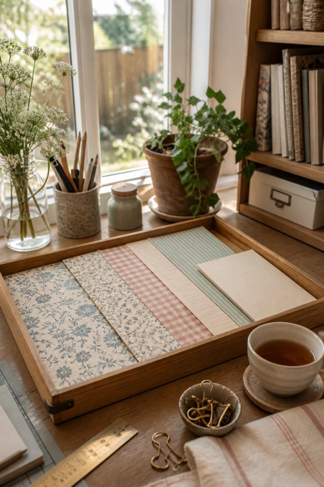
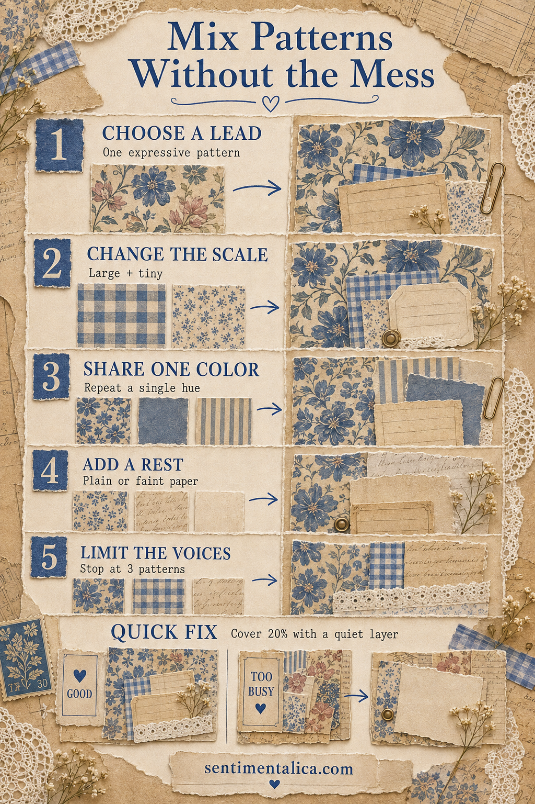

Pattern mixing becomes difficult when every paper asks for attention in the same way. A large floral, tiny sprig, gingham, stripe, and ledger can live on one journal page, but they need different jobs. Think of them as voices: one leads, two support, and the quiet paper lets everyone be heard.
This method works with printed scrapbook papers, book pages, fabric, digital printables, and hand-painted marks.

Choose the lead pattern
Begin with the paper that carries the mood. It might be a large botanical, bold damask, wide stripe, or expressive painted sheet. Give it the largest visible area.
Do not cut the lead pattern into a tiny square. If the design needs room to be understood, let it remain generous and crop it around the most useful part.
Change the scale
Pair the lead with a much smaller pattern. Large flowers beside tiny sprigs feel related but distinct. Large flowers beside another medium floral usually create visual noise because neither knows which one should lead.
Checks, dots, narrow stripes, and small ledger lines are reliable supporting scales.
Share one color
The patterns do not need identical palettes, but they should share at least one visible hue. Pull dusty blue through a floral, gingham, and stripe, or repeat a faded rose across a botanical and ledger fragment.
If two papers almost work together, place a narrow scrap in their shared color between them. That bridge often makes the relationship feel deliberate.

Add a rest
Include one plain or faintly marked paper. Cream, parchment, washed color, or barely visible script gives the eye somewhere to pause. Use it behind writing, beneath a label, or between two active patterns.
Quiet paper is not filler. It creates contrast and makes the patterned pieces look richer.
Stop at three active patterns
For a small page, three patterns are usually enough: one lead, one small support, and one simple linear pattern. Plain paper and textural materials do not need to count as additional voices.
If you want to add a fourth pattern, remove one of the first three or reduce it to a very small accent.
Fix a page that already feels busy
Do not peel everything apart. Cover roughly one fifth of the busiest area with a quiet layer, then restore one small detail on top. A cream writing card, torn vellum panel, or faded label can calm several competing fragments at once.
Another useful test is to photograph the page in black and white. If every area has the same darkness and detail, enlarge one quiet region or remove a medium-value pattern. Strong pages usually contain light, middle, and dark areas rather than one continuous texture.
Arrange the papers before choosing embellishments. When the pattern family is balanced, one label, thread loop, or pressed flower will be enough. Decoration should finish the composition, not rescue it.
Keep useful combinations together by clipping three small offcuts onto one card. Label the back with the role of each paper: lead, small support, and line. The next time a blank page feels difficult, you can begin with a tested family instead of searching through every scrap again. The samples become a practical pattern library rather than another pile to sort.
For more paper-layering ideas, browse the Sentimentalica journal.